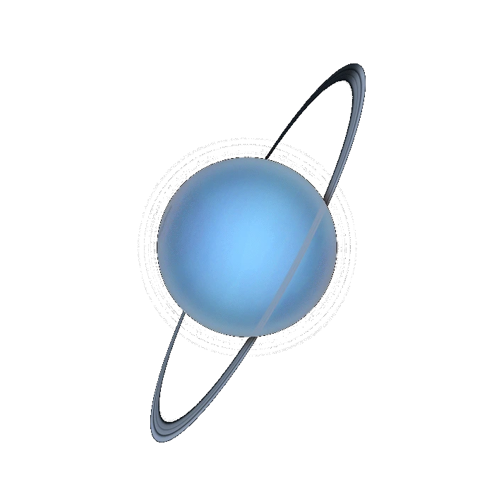
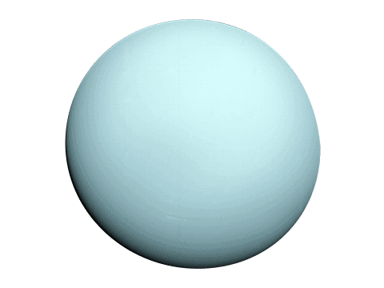

Uranus is the seventh planet from the Sun and is classified as an ice giant, distinguished by its blue-green color caused by methane in its atmosphere. It is one of only two ice giants in the solar system, along with Neptune.
Uranus was discovered in 1781 by astronomer William Herschel, making it the first planet discovered using a telescope rather than being visible to the naked eye. It was named after the ancient Greek god of the sky.
Uranus has a diameter of about 50,724 kilometers, making it about four times the diameter of Earth. It orbits the Sun at an average distance of about 2.9 billion kilometers, taking about 84 Earth years to complete one orbit.
Uranus is unique in that it rotates on its side, with an axial tilt of about 98 degrees. This means its poles experience extreme seasons, each lasting about 21 years, with long periods of continuous daylight or darkness.
Uranus has an atmosphere composed mostly of hydrogen and helium, with a small amount of methane that gives it its distinctive blue-green color. Beneath its atmosphere lies a mantle of water, ammonia, and methane ices surrounding a rocky core.
Uranus has 29 known moons, most of which are named after characters from the works of William Shakespeare and Alexander Pope, rather than mythological figures. It also has a faint ring system, discovered in 1977, consisting of narrow, dark rings.
Uranus has only been visited by one spacecraft, Voyager 2, which flew by in 1986 and provided most of what is currently known about the planet. No dedicated missions have been sent since, though future missions have been proposed to study it in greater detail.
